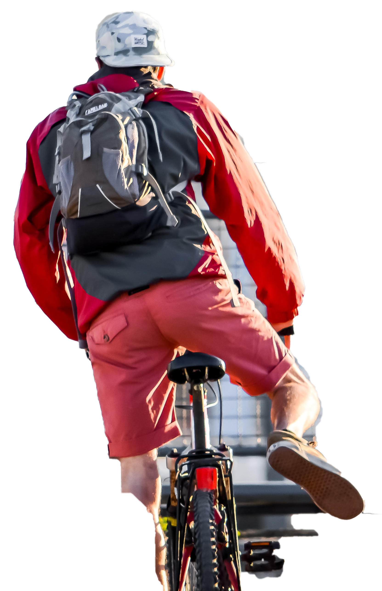

Understanding Magpie Behaviour to Stay Safe
How to gain a sense of calm during springs' swooping season around Perths' foreshore
How to gain a sense of calm during springs' swooping season around Perths' foreshore
Cover you head with a hat or umbrella as a deterred target. Protect your eyes with sunglasses and your hands, those large beaks are very sharp and eye injuries have been previously recorded. Aviod appearing as a threat by slowing down or finding an alterative route on our site map.
As a leader I use several defending displays to show my dominance by Swooping and loud Warning Calls

Sightings of male and female magpies are found along the foreshore. Male appearance has pure white feathers on the back of the head and the female has white blending to grey feathers on the back of the head. Click switch on the top-rightside for a aerial map and gender comparision.
Tagged locations are seen on the right. You can find nesting trees here. Please forwarded to us photographed sighting for updating locations. Check out what a magpie pair looks like.
...eye contact (through sunglasses) is the key here"
"I listen to the Chirp of the magpie, they make a sound before they attack, the sound is very loud. Get off the bike and walk it"
. "My suggestion is for cyclists mainly, if they wear a brimmed hat which I do when bushwalking"
"Apparently walkers are less likely to be attacked as we cyclists are being advised to walk our bikes through the danger area"
email: magpieaware@gmail.com.au